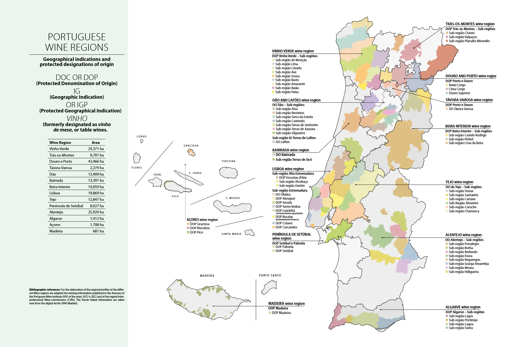

Kapitel 4 · Die portugiesischen Weinregionen Die portugiesischen Weinregionen Portugiesische Weinregionen: geografische Angaben, geschützte Ursprungsbezeichnungen und Rebfläche je Region ← Vinhão (R) / Sousão Weinregion Vinho Verde →